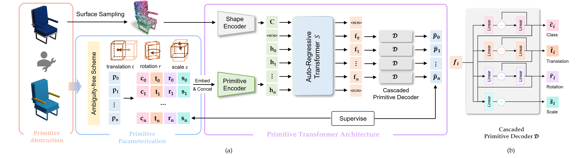

Results from text and images

Shape primitive abstraction, which decomposes complex 3D shapes into simple geometric elements, plays a crucial role in human visual cognition and has broad applications in computer vision and graphics. While recent advances in 3D content generation have shown remarkable progress, existing primitive abstraction methods either rely on geometric optimization with limited semantic understanding or learn from small-scale, category-specific datasets, struggling to generalize across diverse shape categories.
We present PrimitiveAnything, a novel framework that reformulates shape primitive abstraction as a primitive assembly generation task.
PrimitiveAnything includes a shape-conditioned primitive transformer for auto-regressive generation and an ambiguity-free parameterization scheme to represent multiple types of primitives in a unified manner. The proposed framework directly learns the process of primitive assembly from large-scale human-crafted abstractions, enabling it to capture how humans decompose complex shapes into primitive elements.
Through extensive experiments, we demonstrate that PrimitiveAnything can generate high-quality primitive assemblies that better align with human perception while maintaining geometric fidelity across diverse shape categories. It benefits various 3D applications and shows potential for enabling primitive-based user-generated content (UGC) in games.
We propose PrimitiveAnything to decompose complex shapes into 3D primitive assembly via the auto-regressive transformer. Given human-crafted 3D primitive abstraction contents, we first design an ambiguity-free scheme to parameterize each primitive 𝑝 into class label 𝑐, translation 𝑡, rotation 𝑟 and scale 𝑠, and then employ a primitive encoder to form primitive token ℎ. Meanwhile, a shape encoder encodes 3D shape features C from sampled point clouds. Our primitive transformer S predicts the next primitive based on the input condition C and previously generated primitives. To model the dependencies among primitive attributes, we proposed a cascaded primitive decoder D that sequentially predicts primitive attributes.

@misc{ye2025primitiveanything,
title={PrimitiveAnything: Human-Crafted 3D Primitive Assembly Generation with Auto-Regressive Transformer},
author={Jingwen Ye and Yuze He and Yanning Zhou and Yiqin Zhu and Kaiwen Xiao and Yong-Jin Liu and Wei Yang and Xiao Han},
year={2025},
eprint={2505.04622},
archivePrefix={arXiv},
primaryClass={cs.GR}
}